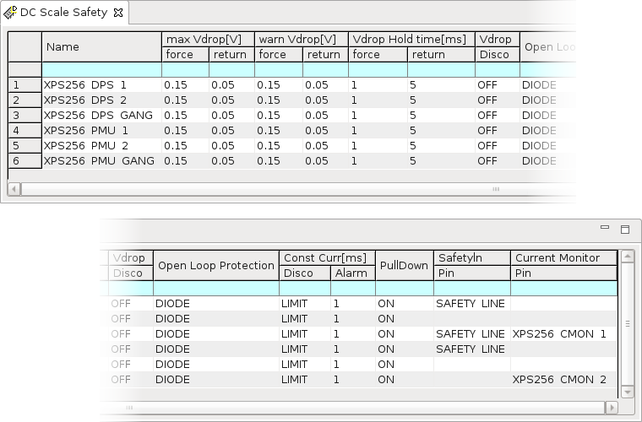

DC Scale Safety editor
The DC Scale Safety editor is used to set global defaults of parameters related to voltage drop levels.

The DC Scale Safety editor handles the following settings:
| Name | A descriptive name for the DUT pin. | |
| max Vdrop[V] | force | Set the alarm threshold for the force / return drop. |
| return | ||
| warn Vdrop[V] | force | Set the warning threshold for the force / return drop. |
| return | ||
| Vdrop Hold time[ms] | force | Specifies the time to wait when the max Vdrop is reached, before the "Voltage drop force" or "Voltage drop return" status flags are set. |
| return | ||
| Vdrop | Disco | Specify whether to disconnect when the "Voltage drop force" or "Voltage drop return" status flags are set. |
| Open Loop Protection | Specifies how the internal force to the sense connection is to be set in order to prevent an unintentionally established open control loop of the output stage. | |
| Const Curr[ms] | Disco | Set the delay time before a channel that is in constant current mode without interruption is disconnected. |
| Alarm | Set the time until the "Constant current" flag is set for a channel that is in constant current mode without interruption. | |
| PullDown | Specifies whether a pull‑down circuit is active after disconnect or not. | |
| Safetyln Pin |
Specifies the utility pin to be used for the hardware‑controlled shutdown of the pin. For more information, refer to XPS256 safety line and DUT board disconnect. |
|
| Monitor Pin | Specifies the pin to be used as output of the current
monitor. For more information, refer to XPS256 current monitor. |
|
You can apply changes made in the DC Scale Safety editor only in disconnected state.
Functional changes
- Introduced in SmarTest 7.10.1
- SmarTest 7.10.2: Shutdown of XPS256 pins via utility lines: New "Safetyln Pin" column.
- SmarTest 7.10.2: XPS256 current monitor: New "Monitor Pin" column.